📊 CAPA DE PRESENTACIÓN (Power BI)
Esta es la cara visible de todo el esfuerzo de datos, diseñada para entregar inteligencia de posicionamiento accionable a la gerencia de Café Andino Export.
A. Business Case (Caso de Negocio)
Problema Actual (Junio 2025): El KPI de Participación se encuentra en 34% (Semáforo Amarillo), con una brecha del 5% respecto al objetivo. Esta brecha representa la pérdida potencial de ~800 toneladas mensuales, equivalentes a $3.12 millones en facturación.
Objetivo Estratégico (Junio 2026): Alcanzar un valor igual o superior a 39% (Semáforo Verde) en el KPI de participación.
Estrategia (Costo: $1.661 Millones): 1. Posicionamiento y Fidelización (Costa Oeste EE. UU. a través de certificaciones y experiencias cafetaleras) y 2. Penetración de Mercado (Plan de Marketing, ferias internacionales y publicidad).
Impacto Económico (ROI): Facturación Adicional Estimada: $260 mil/mes al cumplir el objetivo. Retorno Anual Post-Objetivo: $37.44 Millones (durante el primer año).
Viabilidad de Inversión: La inversión de $1.661 millones es altamente rentable, evidenciada por un Costo/Beneficio de 1.88 y un Retorno sobre la Inversión (ROI) del 87.84%.
Justificación: El crecimiento y el liderazgo solo pueden ser medidos contra el mercado total. Este proyecto resuelve la incapacidad actual de obtener esta métrica de forma automática y oportuna, permitiendo la toma de decisiones estratégicas de precios, volúmenes de producción y enfoque geográfico (EE. UU. Costa Oeste).
B. Definición del KPI y Rangos de Desempeño
1. KPI:
Nombre del KPI: Indicador mensual de porcentaje de participación de Café Andino Export SAC en las exportaciones nacionales de la variedad caturra de café arábico, tostado, molido y sin descafeinar
Definición: Mide la proporción de las toneladas de café Arábica-Caturra tostado, molido, sin descafeinar, exportadas por Café Andino Export, respecto al total nacional (Perú) para esa misma variedad y presentación, expresado en porcentaje.
Fórmula:

Fuente del Numerador: tb_ventas_x_producto (columna cantdidad_ton)
Fuente del Denominador: tb_mercado_mensual (columna mercado_mensual_cantidad_tonelada)
Unidad: Porcentual.
Periodicidad: Mensual.
2. Rangos de Semáforo y Alertas (Alerta Temprana):
| Rango de KPI |
Semáforo |
Interpretación |
| >= 39% |
Verde (Meta) |
Liderazgo sólido, superación del objetivo estratégico. |
| >= 30% a <= 39% |
Amarillo (Alerta) |
Nivel actual (34%). Requiere ajustes inmediatos para anular la brecha del 5%. |
| <= 30% |
Rojo (Peligro) |
Pérdida de competitividad y amenaza grave de pérdida de participación de mercado. |
3. Impacto de Desviación (La Relevancia del 1%)
El reporte visualizará la sensibilidad del KPI con los siguientes datos:
Un aumento de 1% en el KPI representa:
- Volumen Adicional: 154 toneladas exportadas.
- Facturación Adicional: $602 mil dólares al mes.
C. Dashboard y Reporte
El archivo de Power BI contendrá 20 vistas principales:
1. Home (Vista Rápida): Página de inicio de la solución de Business Intelligence (BI) desarrollada en Power BI para Café Andino Export SAC. Incluye pestañas de Navegación (Menú de Pestañas): La cabecera (en la parte superior) indica las secciones disponibles para la exploración detallada del BI:
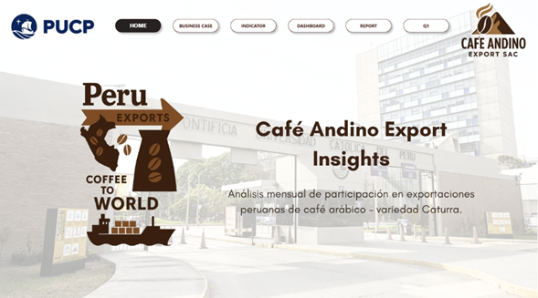
2. Business Case: Descripción breve de la empresa, el objetivo del caso de negocio, la estrategia para alcanzar el objetivo y el costo beneficio de su implementación.

3. Indicator (Indicador): Visualización que detalla la definición del Indicador, la Fórmula de cálculo, su frecuencia, unidad de medida y su impacto económico.
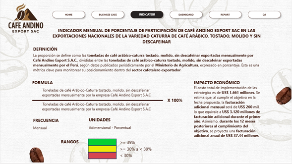
4. Dashboard Ejecutivo (Vista Rápida): Visualización Central: Un medidor (gauge) que muestra el KPI - Participación Mensual (%) del último período.
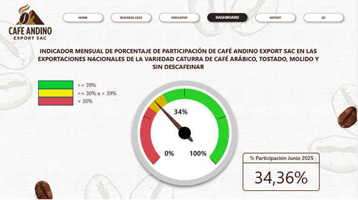
5. Report(Reporte): Esta visualización se centra en el Indicador Mensual de Porcentaje de Participación de Café Andino Export SAC. El gráfico de línea muestra la evolución histórica del porcentaje de participación y establece dos líneas de proyección clave para el futuro:
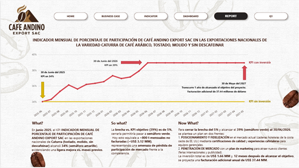
Question 1: ¿Qué ESTADO generó el mayor impacto en el valor promedio del INDICADOR MENSUAL DE PORCENTAJE DE PARTICIPACIÓN DE CAFÉ ANDINO EXPORT SAC EN LAS EXPORTACIONES NACIONALES DE LA VARIEDAD CATURRA DE CAFÉ ARÁBICO, TOSTADO, MOLIDO Y SIN DESCAFEINAR, durante el periodo de enero a junio del 2025?:
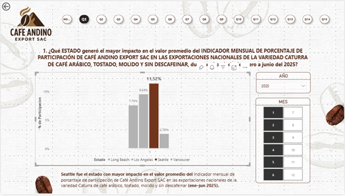
Esta visualización incluye la opción de "Obtener detalles" (Drill through) para obtener detalles del indicador:
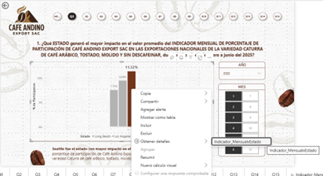
Al seleccionar la opción de Obtener detalles" (Drill through), se visualización el detalle:
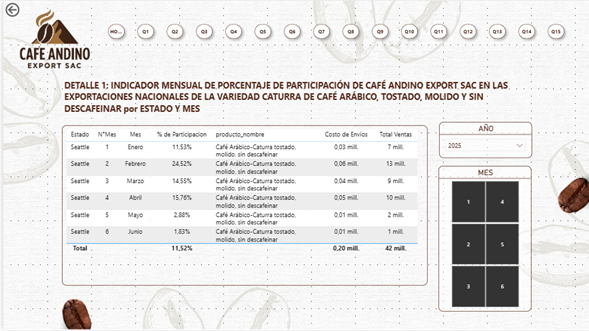
Question 2: ¿Qué TIPO DE CLIENTE, contribuyó más durante el año 2024, en el valor promedio del INDICADOR MENSUAL DE PORCENTAJE DE PARTICIPACIÓN DE CAFÉ ANDINO EXPORT SAC EN LAS EXPORTACIONES NACIONALES DE LA VARIEDAD CATURRA DE CAFÉ ARÁBICO, TOSTADO, MOLIDO Y SIN DESCAFEINAR de la empresa Café Andino Export SAC?:
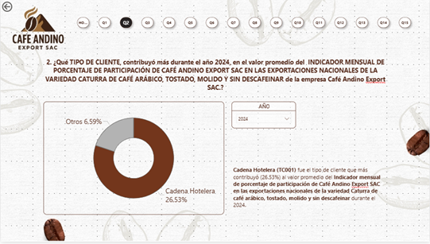
Esta visualización incluye la opción de "Obtener detalles" (Drill through) para obtener detalles del indicador:
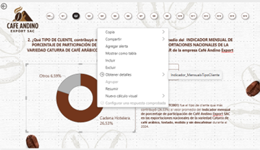
Al seleccionar la opción de Obtener detalles" (Drill through), se visualización el detalle:
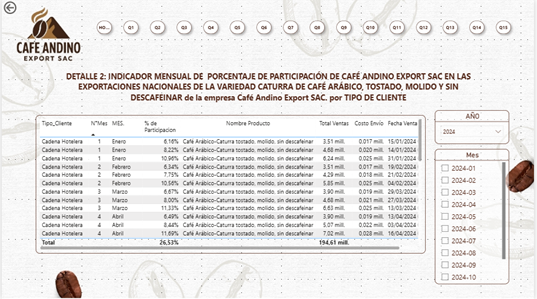
Question 3: ¿Qué PUERTO DE DESEMBARQUE contribuyó más al INDICADOR MENSUAL DE PORCENTAJE DE PARTICIPACIÓN DE CAFÉ ANDINO EXPORT SAC EN LAS EXPORTACIONES NACIONALES DE LA VARIEDAD CATURRA DE CAFÉ ARÁBICO, TOSTADO, MOLIDO Y SIN DESCAFEINAR durante el el mes de febrero del año 2025?.
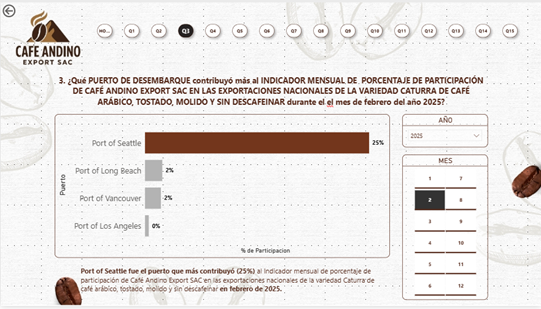
Esta visualización incluye la opción de "Obtener detalles" (Drill through) para obtener detalles del indicador:
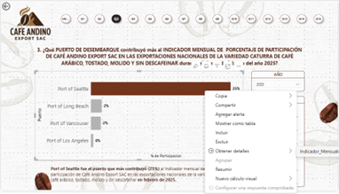
Al seleccionar la opción de Obtener detalles" (Drill through), se visualización el detalle:
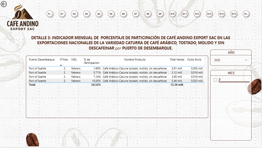
Question 4: ¿Qué PROVEEDOR contribuyó más durante el primer semestre del año 2025 en el valor promedio del INDICADOR MENSUAL DE PORCENTAJE DE PARTICIPACIÓN DE CAFÉ ANDINO EXPORT SAC EN LAS EXPORTACIONES NACIONALES DE LA VARIEDAD CATURRA DE CAFÉ ARÁBICO, TOSTADO, MOLIDO Y SIN DESCAFEINAR?.
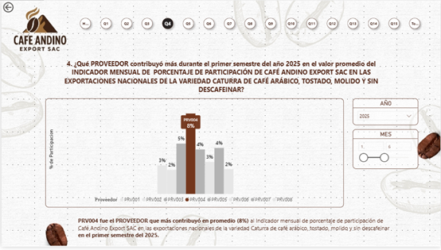
Esta visualización incluye la opción de "Obtener detalles" (Drill through) para obtener detalles del indicador:
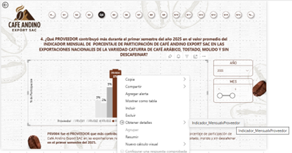
Al seleccionar la opción de Obtener detalles" (Drill through), se visualización el detalle:
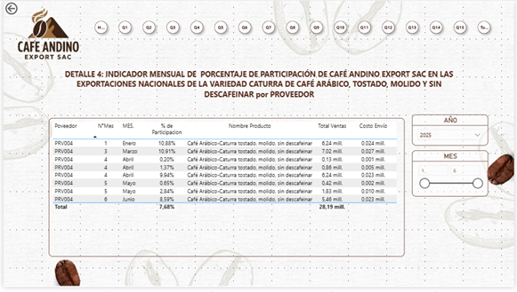
Question 5: ¿Qué BROKER ADUANERO contribuyó en mayor medida al INDICADOR MENSUAL DE PORCENTAJE DE PARTICIPACIÓN DE CAFÉ ANDINO EXPORT SAC EN LAS EXPORTACIONES NACIONALES DE LA VARIEDAD CATURRA DE CAFÉ ARÁBICO, TOSTADO, MOLIDO Y SIN DESCAFEINAR durante el mes de JUNIO del 2025?.
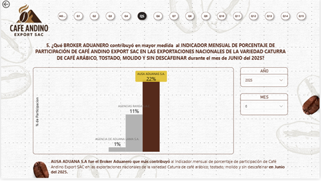
Esta visualización incluye la opción de "Obtener detalles" (Drill through) para obtener detalles del indicador:
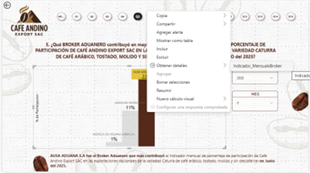
Al seleccionar la opción de Obtener detalles" (Drill through), se visualización el detalle:
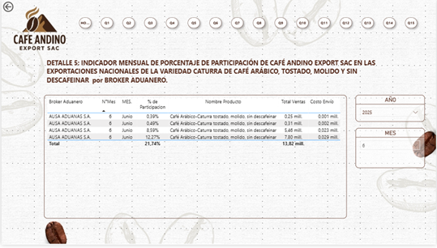
Question 6: Cuál es el TIPO DE COLABORADOR que, durante el periodo de Enero a Junio del 2025 impactó en mayor medida en el valor promedio al INDICADOR MENSUAL DE PORCENTAJE DE PARTICIPACIÓN DE CAFÉ ANDINO EXPORT SAC EN LAS EXPORTACIONES NACIONALES DE LA VARIEDAD CATURRA DE CAFÉ ARÁBICO, TOSTADO, MOLIDO Y SIN DESCAFEINAR?:
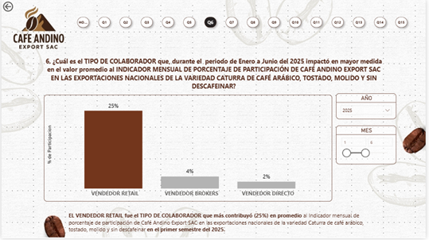
Esta visualización incluye la opción de "Obtener detalles" (Drill through) para obtener detalles del indicador:
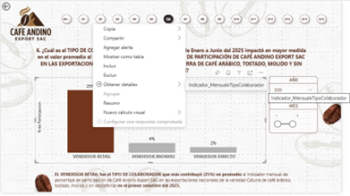
Al seleccionar la opción de Obtener detalles" (Drill through), se visualización el detalle:
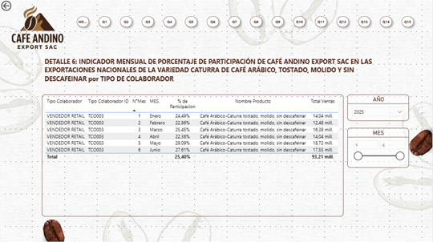
Question 7: ¿Cuál es el top 5 de COLABORADORES que impactaron en mayor medida en el valor promedio del INDICADOR MENSUAL DE PORCENTAJE DE PARTICIPACIÓN DE CAFÉ ANDINO EXPORT SAC EN LAS EXPORTACIONES NACIONALES DE LA VARIEDAD CATURRA DE CAFÉ ARÁBICO, TOSTADO, MOLIDO Y SIN DESCAFEINAR en el periodo de Enero a Junio del 2025?:
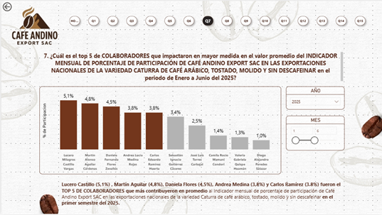
Esta visualización incluye la opción de "Obtener detalles" (Drill through) para obtener detalles del indicador:
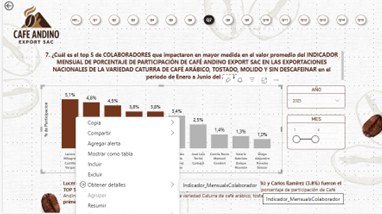
Al seleccionar la opción de Obtener detalles" (Drill through), se visualización el detalle:
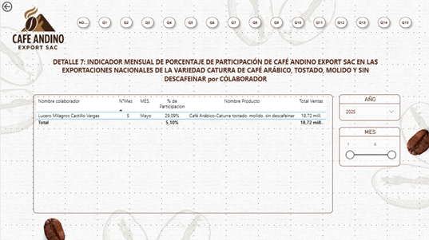
Question 8: ¿Cuál es el top 3 de PROVEEDORES DE ENVIO que impactaron en mayor medida en el valor promedio del INDICADOR MENSUAL DE PORCENTAJE DE PARTICIPACIÓN DE CAFÉ ANDINO EXPORT SAC EN LAS EXPORTACIONES NACIONALES DE LA VARIEDAD CATURRA DE CAFÉ ARÁBICO, TOSTADO, MOLIDO Y SIN DESCAFEINAR en el 2024?
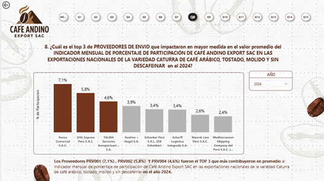
Esta visualización incluye la opción de "Obtener detalles" (Drill through) para obtener detalles del indicador:
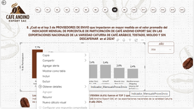
Al seleccionar la opción de Obtener detalles" (Drill through), se visualización el detalle:
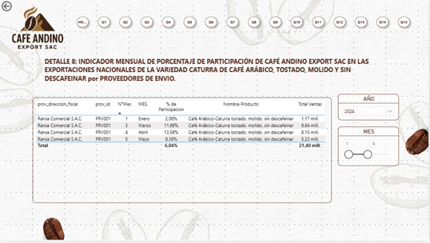
Question 9: ¿Cuál es el trimestre del año 2024 que registró el mayor valor promedio del INDICADOR MENSUAL DE PORCENTAJE DE PARTICIPACIÓN DE CAFÉ ANDINO EXPORT SAC EN LAS EXPORTACIONES NACIONALES DE LA VARIEDAD CATURRA DE CAFÉ ARÁBICO, TOSTADO, MOLIDO Y SIN DESCAFEINAR?.
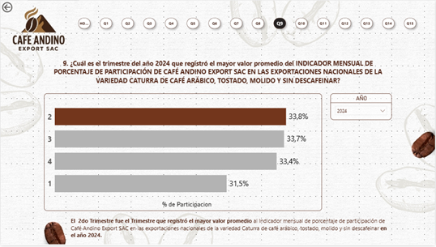
Esta visualización incluye la opción de "Obtener detalles" (Drill through) para obtener detalles del indicador:
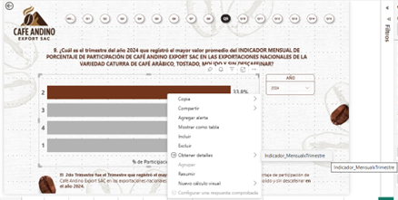
Al seleccionar la opción de Obtener detalles" (Drill through), se visualización el detalle:
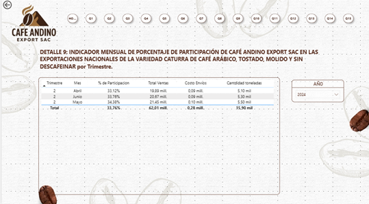
Question 10: ¿En qué MES del año 2023 se registró el máximo valor del INDICADOR MENSUAL DE PORCENTAJE DE PARTICIPACIÓN DE CAFÉ ANDINO EXPORT SAC EN LAS EXPORTACIONES NACIONALES DE LA VARIEDAD CATURRA DE CAFÉ ARÁBICO, TOSTADO, MOLIDO Y SIN DESCAFEINAR?.
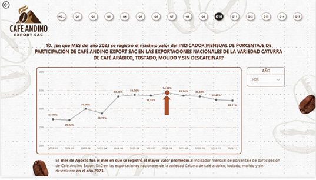
Esta visualización incluye la opción de "Obtener detalles" (Drill through) para obtener detalles del indicador:
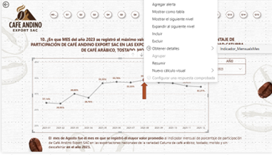
Al seleccionar la opción de Obtener detalles" (Drill through), se visualización el detalle:
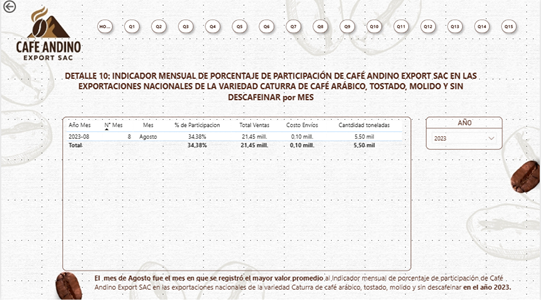
Question 11: ¿Qué PAÍS generó LA MAYOR SUMATORIA para el INDICADOR MENSUAL DE CANTIDAD DE TONELADAS EXPORTADAS POR CAFÉ ANDINO EXPORT SAC EN LAS EXPORTACIONES NACIONALES DE LA VARIEDAD CATURRA DE CAFÉ ARÁBICO, TOSTADO, MOLIDO Y SIN DESCAFEINAR, durante el periodo ENERO a JUNIO del 2025?.
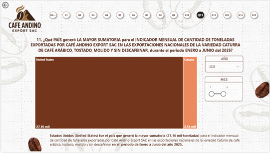
Esta visualización incluye la opción de "Obtener detalles" (Drill through) para obtener detalles del indicador:
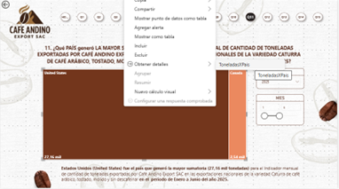
Al seleccionar la opción de Obtener detalles" (Drill through), se visualización el detalle:
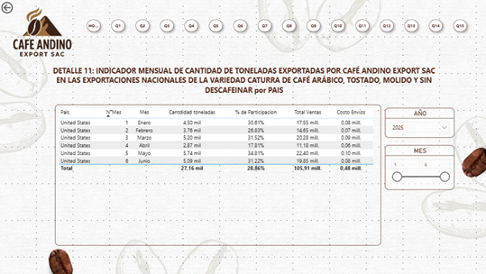
Question 12: ¿Cuál es el puerto que presenta la mayor evolución promedio anual del monto total de ventas (USD) de Café Andino Export SAC para la variedad Caturra de café arábico, tostado, molido y sin descafeinar durante el periodo 2023--2025?.
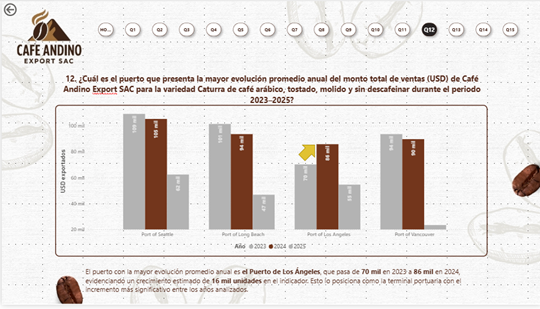
Esta visualización incluye la opción de "Obtener detalles" (Drill through) para obtener detalles del indicador:
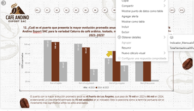
Al seleccionar la opción de Obtener detalles" (Drill through), se visualización el detalle:
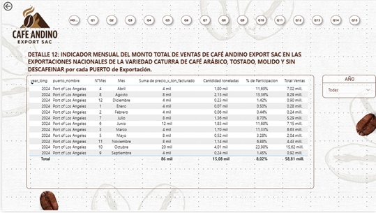
Question 13: ¿Qué factores tienen mayor influencia en el aumento de la sumatoria del INDICADOR MENSUAL DE TONELADAS EXPORTADAS de Café Andino Export SAC durante el PRIMER SEMESTRE DE 2025 para la variedad Caturra de café arábico, tostado, molido y sin descafeinar?.
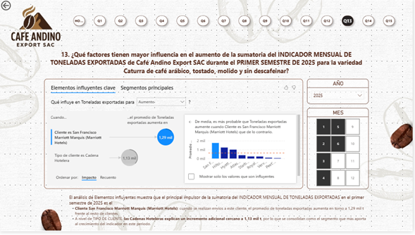
Esta visualización incluye la opción de "Navegación entre páginas" (empleando la forma de flecha y activando la opción de acción) para obtener detalles del indicador:
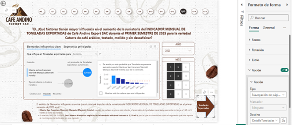
Al seleccionar la flecha para la navegación entre páginas se visualización el detalle:
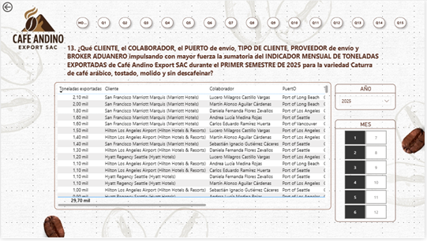
Question 14: ¿Qué relación existe entre la CANTIDAD EXPORTADA (ton) y el COSTO DE ENVÍO en las exportaciones nacionales de CAFÉ ANDINO EXPORT SAC de la variedad Caturra de café arábico tostado, molido y sin descafeinar durante 2024?.
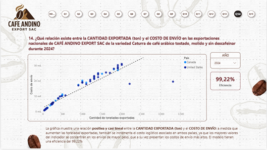
Esta visualización incluye la opción de "Obtener detalles" (Drill through) para obtener detalles del indicador:

Al seleccionar la opción de Obtener detalles" (Drill through), se visualización el detalle:

Question 15: ¿Cómo se distribuye, en términos porcentuales, el valor total del INDICADOR MENSUAL DEL MONTO TOTAL DE VENTAS DE CAFÉ ANDINO EXPORT SAC EN LAS EXPORTACIONES NACIONALES DE LA VARIEDAD CATURRA DE CAFÉ ARÁBICO, TOSTADO, MOLIDO Y SIN DESCAFEINAR por cliente (Periodo: junio 2025)?.
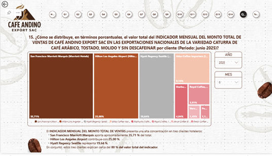
Esta visualización incluye la opción de "Obtener detalles" (Drill through) para obtener detalles del indicador:

Al seleccionar la opción de Obtener detalles" (Drill through), se visualización el detalle:
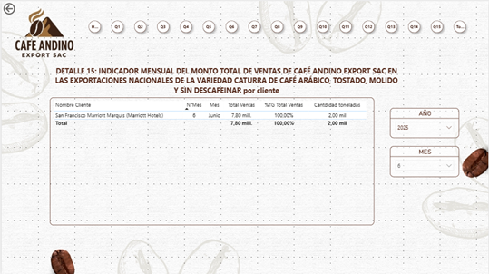